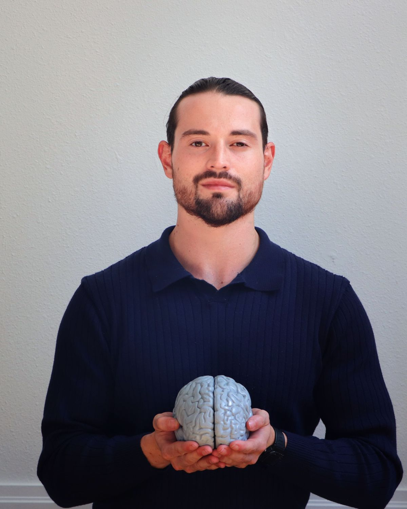
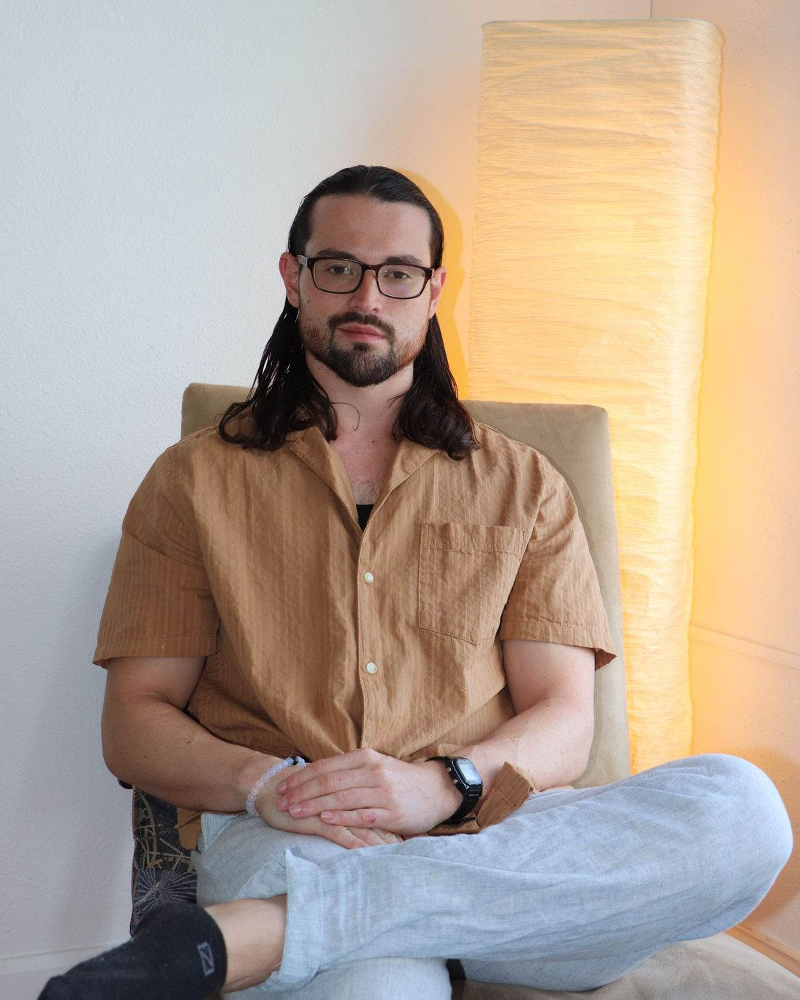
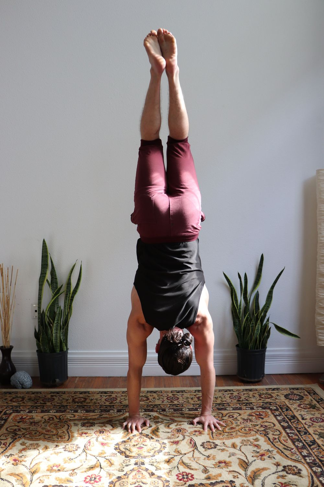
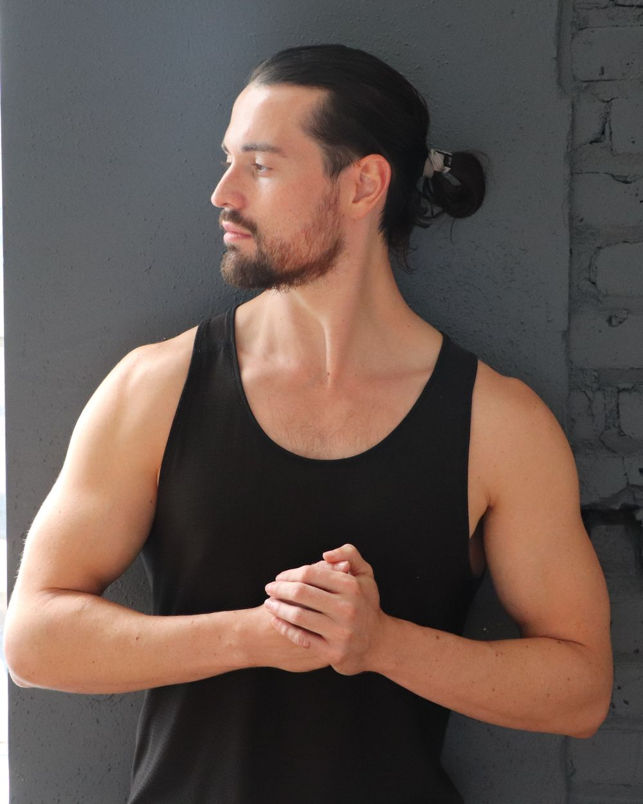
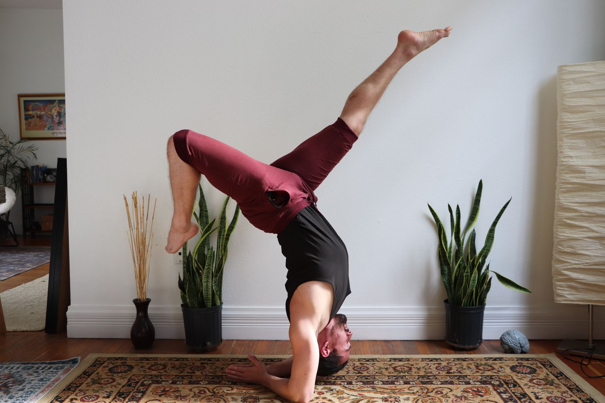

48th
Free to startInadequacy→Resourcefulness→Wisdom
Address feelings of inadequacy, strengthen your capacity for creative resourcing, and learn to trust your body's innermost knowing.
Get the free meditations →Relational whole-health therapy for your healing, integration and evolution. Modern neuroscience, body-based practice and deep contemplative wisdom, in Denver and online.


I grew up in Texas, curious about the stars and our place in the cosmos. In my first year at university, the sudden death of my mother shattered me. It was the moment my path of healing began.
I kept studying physics and astrophysics, and took part in research on the neuroscience of meditation. But a life lived only in the intellect left me lonely and disconnected. So I went looking for what was missing: counseling, yoga, breath, the wilderness, and the world's wisdom traditions.
That search brought me to Colorado and to Naropa University, and to Neurosculpting®, which joined my love of science with meditation as a foundation for nervous-system healing. In 2022 I opened Insource: about connecting from the source within, for your deepest wisdom and healing.
“I did not choose to be a therapist. It chose me.”
Anthony, in conversation with VoyageDenverB.S. Physics, concentration in astrophysics, minors in mathematics & psychology. Texas Tech University
Moves to Colorado to study Mindfulness-Based Transpersonal Counseling at Naropa University
M.A. in Clinical Mental Health Counseling. Certified SOMA Breathwork instructor. Opens Insource
Psychotherapist and Neurosculpting® facilitator at the Neurosculpting Institute, Gene Keys Guide, and mentor to new facilitators
Physics, neuroscience, psychology, mythology and the world's wisdom traditions, and a curiosity that never switched off.
Strength, breath, yoga and handstands. Exploring what a body can do, and how it heals.
I see every relationship as a spiritual practice of deep healing and awakening through intimacy.
Trusting the present moment so deeply that I can soften into uncertainty and not-knowing.
Creating new Neurosculpting® meditations, teaching, and mentoring the next generation of facilitators.
One-on-one, in person in Denver or online. Every session meets you where you are, with practical tools you can keep using on your own.
Relational psychotherapy for mental health, trauma healing and more. Support with anxiety, depression, self-doubt and relationships, drawing on IFS, Gestalt and transpersonal psychology.
02For nervous-system health and neuroplasticity brain-growth training: a five-step meditation process that steadies you from within and rewires old patterns.
03High-quality, affordable KAP paired with Neurosculpting®: a rare combination for deep, integrated change, held in a licensed therapeutic relationship.
04SOMA Breathwork for overall life function, energy efficiency, performance and integration, plus yoga, one-on-one or at wellness and dance retreats.
05Sessions on your hologenetic profile to simplify and deepen your life and unlock your higher purpose. Walk the Activation Sequence together, or the Venus Sequence with a licensed therapist beside you.
06Classes and workshops for your organisation or retreat, and mentoring for new and existing Neurosculpting® facilitators.
I bring together physics and neuroscience, the body, and the contemplative traditions, so that change happens in more than your thinking. It happens in your nervous system, your relationships and your sense of meaning.
Neuroplasticity-based practices that teach your brain new, kinder pathways.
Somatic work, breath and movement to get out of the "monkey mind" and into the body.
Transpersonal and relational work: with yourself, the people you love, nature and the cosmos.
Created and narrated by Anthony. Each bundle is three guided meditations that move in sequence from a Gene Key's shadow, to its gift, to its highest expression, combining neuroplasticity with the art of contemplation.
Address feelings of inadequacy, strengthen your capacity for creative resourcing, and learn to trust your body's innermost knowing.
Get the free meditations →Navigate emotional triggers, unlock energy and joy through the breath, and embody self-love.
Listen →Shift the body's experience of struggle into ease and purposeful action. Created with deep care for anyone with military experience.
Listen →Rewire fear-based control into inner authority, and meet life's greatest challenges with trust and resilience.
Listen →Words from Anthony's own Gene Keys contemplations: each key's journey from its shadow, to its gift, to its highest expression.
Purposelessness is the avoidance of living your life fully from not embracing the deepest fears of dying.
Totality is experiencing life with purpose by being fully alive in every moment.
Immortality is dying into the mythical awareness that our consciousness is eternal.
Agitation is the human shadow of reacting to life with harshness and insecurity from the fear of shock.
Initiative is the genius of responding to any difficulty with creativity, trusting life's invitations to walk one's own unique path.
Awakening happens mysteriously to the degree someone utterly softens into the lightning surprise of being so much of just themselves.
Unease is the primal discomfort of anywhere fear is living in the body.
Intuition is deep listening from trusting how nature moves through you.
Clarity is the seeing of the gentle softness at the heart of all things.
More contemplations on Instagram →
Anthony guides alongside you, allowing you to feel empowered in your own innate healing ability. You deserve a life that you author.Kallee Brownlee
“In a short period of time, I feel about 80% better and now know how to apply the tools on my own.”Stella P.
“As a male and with a background in a technical field, Anthony’s ability to ‘get me’ was fantastic.”Jim Mundo
“Some weeks we dive deep into neurosculpting and other weeks discuss relational aspects of my life. He always meets me where I am.”Kelsey Cunningham
“After completing 10 sessions with Anthony, I have a whole new respect and gratitude for breathing.”Lisa Saldaña
“From my first visit I’ve felt very comfortable, heard and understood.”Cassandra Huckleberry
Excerpts from client reviews published by the Neurosculpting Institute.
Embodiment isn't a theory for me. I train strength, calisthenics and handstands, teach yoga and breath at gatherings like Denver Oasis, and my biggest passion is Brazilian Zouk, a partner dance that keeps teaching me about presence, trust and connection. You'll find me teaching at Zouk events and retreats like Beyond the Dance Floor.



From grief and astrophysics to yoga, Naropa and a practice built on neuroplasticity.
What happens when meditation, neuroplasticity and the codes of human consciousness meet in one practice.
"You don't see the world as it is, you see the world as you are." A physicist's look at attitude.
The space between stimulus and response, and how to train your nervous system to find it.
A new approach that brings brain training into the therapy room.
Children and stories last. How the stories we tell ourselves shape the brain.
Request a session through the Neurosculpting Institute's secure client portal, in person in Denver or online. For Gene Keys sessions, workshops or collaborations, reach out directly.
Sessions are available in person and online. Ask about insurance support for ketamine-assisted psychotherapy when you reach out.